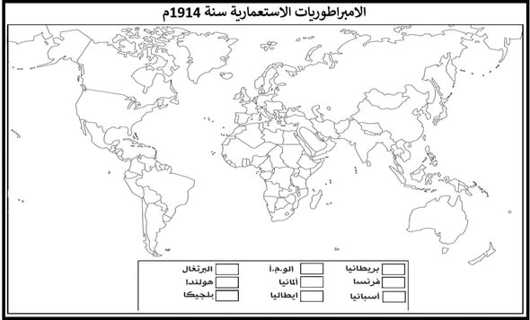
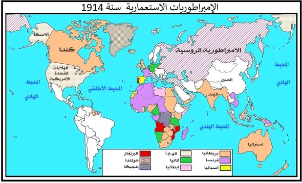

تمارين – الحرب العالمية الأولى: الأسباب والنتائج
- السياسة العالمية (Weltpolitik):
- استراتيجية توسعية انتهجها الإمبراطور الألماني غليوم الثاني بعد إقالة بسمارك عام 1890، هدفت إلى بناء أسطول بحري ضخم، واقتناص مستعمرات في إفريقيا وآسيا، ومد النفوذ الاقتصادي عبر مشروع سكة حديد برلين-بغداد. أدت هذه السياسة إلى صدام مباشر مع المصالح البريطانية والفرنسية والروسية، وساهمت في تشكيل أحلاف مضادة لألمانيا.
- الحلف الثلاثي:
- تحالف عسكري دفاعي نشأ بين ألمانيا والإمبراطورية النمساوية المجرية (أكتوبر 1879)، وانضمت إليه إيطاليا (مارس 1882). هدف إلى عزل فرنسا والحفاظ على الوضع القائم في أوروبا. انسحبت إيطاليا منه عام 1915، وتدعم الحلف لاحقاً بانضمام الدولة العثمانية (1914) وبلغاريا (1915) ليشكل نواة "دول المركز" خلال الحرب العالمية الأولى.
- جمعية الأمم:
- منظمة دولية تأسست عام 1920 بموجب معاهدة فرساي ومقرها جنيف، استناداً إلى المبدأ الرابع عشر من برنامج الرئيس الأمريكي وودرو ويلسون. هدفت إلى ضمان الأمن الجماعي، والحد من التسلح، وتسوية النزاعات سلمياً. لكنها افتقرت إلى جيش دائم، وتطلبت قراراتها الإجماع، ولم تنضم إليها الولايات المتحدة، مما أضعف فعاليتها وجعلها عاجزة عن منع الحرب العالمية الثانية.


الخريطة المكتملة – نموذج الإجابة
| الدولة | الإنفاق (مليون £) |
|---|---|
| ألمانيا | 80 |
| روسيا | 60 |
| بريطانيا | 50 |
| فرنسا | 45 |
المصدر: بيانات تاريخية من سباق التسلح قبل الحرب العالمية الأولى
- مقدمة: تقديم فكرة أن الأحلاف حولت الحرب من نزاع محلي إلى صراع عالمي.
- تطوير: أولاً. الحلف الثلاثي والوفاق الثلاثي؛ ثانياً. تأثير الأحلاف على توسيع الحرب.
- خاتمة: الأحلاف كانت سبباً مباشراً في تحويل الأزمة إلى حرب عالمية.
مقدمة
قبل الحرب العالمية الأولى، كان نظام الأحلاف العسكرية قد قسّم أوروبا إلى معسكرين متنافسين: الحلف الثلاثي والوفاق الثلاثي. هذه التحالفات جعلت أي نزاع محلي قابلاً للتحول إلى حرب شاملة، وهو ما حدث بالفعل عام 1914.
تطوير
أولاً. الحلف الثلاثي والوفاق الثلاثي
الحلف الثلاثي
تشكل الحلف الثلاثي بين ألمانيا والنمسا-المجر وإيطاليا بهدف عزل فرنسا، بينما جاء الوفاق الثلاثي بين فرنسا وبريطانيا وروسيا لتطويق ألمانيا.
الوفاق الثلاثي
الوفاق الثلاثي عمل على مواجهة التوسع الألماني، مما خلق جواً من التوتر والاستقطاب في أوروبا.
ثانياً. تأثير الأحلاف على توسيع الحرب
حادثة سراييفو
عندما اغتيل ولي العهد النمساوي، أعلنت النمسا الحرب على صربيا، فدخلت روسيا دفاعاً عن صربيا، ثم تدخلت ألمانيا ضد روسيا وفرنسا، مما جعل الحرب عالمية بسبب شبكة التحالفات.
التصعيد
التحالفات حوّلت أزمة إقليمية إلى صراع شامل، إذ انضمت بريطانيا بعد خرق ألمانيا لحياد بلجيكا، ثم دول أخرى.
خاتمة
هكذا كانت الأحلاف العسكرية عاملاً حاسماً في اندلاع الحرب العالمية الأولى، إذ جعلت السلام هشاً وأي نزاع محلي قابلاً للتحول إلى حرب مدمرة.
الخط الزمني: 1879: الحلف الثنائي ...